Программирование: Python
Напишите код на языке Python, позволяющий вычислить логические операции (задание 1), с помощью конкатенации строк, умножения строки на число или как-то иначе создайте таблицу и выведите её (задание 2) и, наконец, поработайте со списком чисел ряда Фибоначчи и кортежем (задание 3).
Разместите код на платформе repl.it (https://repl.it), ссылку на доску (или доски) разместите в форуме, решение задачи сопроводите соответствующими комментариями (при необходимости). Убедитесь, что в вашем решении есть ФИО автора и номер варианта. Для оформления используйте шаблон: https://repl.it/KuMT/2
print("Задание 1(1,5,14)\nЗадание 3(7,21)\n\n");
print('Задание 1\n\n*** Инверсия ***\n');
print(' A ¬ А ');
print('False ', not False);
print('True ', not True,'\n');
print('*** Эквиваленция ***\n');
print('A <–> B <=> ¬ A ∧ ¬ B v A ∧ B\n')
print(' A B A <–> B');
print("False False ", not False and not False or False and False);
print("False True ", not False and not True or False and True );
print("True False ", not True and not False or True and False);
print("True True ", not True and not True or True and True, '\n');
print('*** Номер 14 ***\n');
print('(A v B <–> B v C) ∧ (¬ C <–> A)\n');
print('* A <–> B = ¬ A ∧ ¬ B v A ∧ B\n');
print(' Приведённая формула: (¬(A v B) ∧ (B v C) v (A v B) ∧ (B v C)) ∧ (C ∧ ¬ A v ¬ C ∧ A)\n');
print(' A B C Result ')
print("False False False ", (not (False or False) and not (False or False) or (False or False) and (False or False)) and (False and not False or not False and False) );
print("False False True ",(not (False or False) and not (False or True) or (False or False) and (False or True)) and (True and not False or not True and False) );
print("False True False ",(not (False or True) and not (True or False) or (False or True) and (True or False)) and (False and not False or not False and False) );
print("False True True ", (not (False or True) and not (True or False) or (False or False) and (False or False)) and (False and not False or not False and False));
print("True False False ",(not (False or False) and not (False or False) or (False or True) and (True or True)) and (True and not False or not True and False) );
print("True False True ",(not (True or False) and not (False or True) or (True or False) and (False or True)) and (True and not True or not True and True) );
print("True True False ",(not (True or True) and not (True or False) or (True or True) and (True or False)) and (False and not True or not False and True) );
print("True True True ", (not (True or True) and not (True or True) or (True or True) and (True or True)) and (True and not True or not True and True), '\n');
print('Задание 2\n');
print('--- Инверсия ---\n');
print('*'*20);
print('* A * ¬ А *');
print('*'*20);
print('* False * ', not False, ' *');
print('*'*20);
print('* True * ', not True, ' *');
print('*'*20,'\n');
print('--- Эквиваленция ---\n');
print('*'*34);
print('* A * B * A <–> B *');
print('*'*34);
print("* False * False * ", not False and not False or False and False, ' *');
print('*'*34);
print("* False * True * ", not False and not True or False and True,' *');
print('*'*34);
print("* True * False * ", not True and not False or True and False,' *');
print('*'*34);
print("* True * True * ", not True and not True or True and True,' *');
print('*'*34,'\n');
print('*** Номер 14 ***\n');
print('*'*36);
print('* A * B * C * Result *')
print('*'*36);
print("* False * False * False * ", (not (False or False) and not (False or False) or (False or False) and (False or False)) and (False and not False or not False and False),' *'); #1
print('*'*36);
print("* False * False * True * ",(not (False or False) and not (False or True) or (False or False) and (False or True)) and (True and not False or not True and False),' *' ); #2
print('*'*36);
print("* False * True * False * ",(not (False or True) and not (True or False) or (False or True) and (True or False)) and (False and not False or not False and False),' *' ); #3
print('*'*36);
print("* False * True * True * ", (not (False or True) and not (True or False) or (False or False) and (False or False)) and (False and not False or not False and False), ' *'); #4
print('*'*36);
print("* True * False * False * ",(not (False or False) and not (False or False) or (False or True) and (True or True)) and (True and not False or not True and False),' *' ); #5
print('*'*36);
print("* True * False * True * ",(not (True or False) and not (False or True) or (True or False) and (False or True)) and (True and not True or not True and True),' *' ); #6
print('*'*36);
print("* True * True * False * ",(not (True or True) and not (True or False) or (True or True) and (True or False)) and (False and not True or not False and True),' *' ); #7
print('*'*36);
print("* True * True * True * ", (not (True or True) and not (True or True) or (True or True) and (True or True)) and (True and not True or not True and True), ' *'); #8
print('*'*36,'\n');
print('Задание 3 (Список)\n');
X = [0, 1, 1, 2, 3, 5, 8, 13, 21, 34, 55, 89, 144, 233, 377, 610, 987, 1597, 2584, 4181, 6765, 10946];
print('Дан список: ',X,'\n');
print('Найти список элементов, стоящих на четных позициях во второй половине списка в обратном порядке');
r = X[10:21:];
print(' 1) Вторая половина списка: ', r);
z = r[1::2];
print(' 2) Вывод элементов на чётных похициях во второй половине списка: ', z);
q = z[::-1];
print(' 3) Вывод элементов на чётных похициях во второй половине списка в обратном порядке: ', q, '\n');
print('Задание 3 (Кортеж)\n');
car = ("name", " DeLorean DMC-12", "motor_pos", "rear", "n_of_wheels", 4, "n_of_passengers", 2, "weight", 1.230, "height", 1.140, "length", 4.216, "width", 1.857, "max_speed", 177);
print ('Дан кортеж: ', car);
print ('Необходимо найти сумму цнлочисленных элементов ');
sum = 0;
for i in car:
if type(i) == int:
sum = sum + i
print('Ответ: ',sum);
#*********************Задание 1*********************
print('<<<<< Задание 1 >>>>>\n')
#---------------------Инверсия---------------------
def Inversion(a):
""" Данная функция выполняет операцию "инверсия" для входящего аргумента """
return int(not a)
#print(Inversion.__doc__)
def my_func_zero():
""" Данная функция выводит \n таблицу истинности для инверсии \n границы таблицы выводятся с помощью вложенных циклов """
print('Инверсия\n\n¬ А\n');
print('*'*15)
print('* A * ¬ А *');
print('*'*15)
for i in range(1,2):
for j in range(0,2):
print('* ', j, ' * ', Inversion(j),' *');
print('*'*15)
my_func_zero()
print(my_func_zero.__doc__)
assert ((not 0) == 1), "Должно быть 'True'"
assert ((not 1) == 0), "Должно быть 'True'"
#---------------------Эквиваленция---------------------
print()
def Equivalence(a,b):
""" Данная функция выполняет операцию "эквиваленция" для двух входящих аргументов """
result = int(not a and not b or a and b)
return result
#print(Equivalence.__doc__)
def my_func():
print('Эквиваленция\n\nA <–> B <=> ¬ A ∧ ¬ B v A ∧ B\n');
""" Данная функция выводит \n таблицу истинности для "эквивалентности" \n границы таблицы выводятся с помощью вложенных циклов """
print('*'*25)
print('* A * B * A <–> B *');
print('*'*25)
for i in range(0,2):
for j in range(0,2):
print('* ', i, ' * ', j, ' *' + ' '*4, Equivalence(i,j), ' '*4 +'*');
print('*'*25)
my_func()
#print(my_func.__doc__)
assert (not 0 and not 0 or 0 and 0) == 1, "Должно быть 'True'"
assert (not 0 and not 1 or 0 and 1) == 0, "Должно быть 'False'"
assert (not 1 and not 1 or 0 and 0) == 0, "Должно быть 'False'"
assert (not 1 and not 1 or 1 and 1) == 1, "Должно быть 'True'"
#---------------------Номер 14--------------------
def compound_formula(a,b,c):
""" Данная функция выполняет сожную логическую оперецию """
x = int((not(a or b) and (b or c) or (a or b) and (b or c)) and (c and not a or not c and a))
return x
#print(compound_formula.__doc__)
print()
def my_func_two():
""" Данная функция выводит таблицу истинности\n для сложной логической операции \n границы таблицы выводятся с помощью вложенных циклов """
print('Номер 14\n\n(A v B <–> B v C) ∧ (¬ C <–> A)\n')
print('*'*30)
print('* A * B * C * Result *');
print('*'*30)
for i in range(0,2):
for j in range(0,2):
for k in range(0,2):
print('* ', i, ' * ', j, ' * ', k, ' *' + ' '*4, compound_formula(i,j,k), ' '*3 +'*');
print('*'*30)
my_func_two()
#print(my_func_two.__doc__)
#*********************Задание 2(1)*********************
print('\n<<<<< Задание 2(1) >>>>>\n')
X = [0, 1, 1, 2, 3, 5, 8, 13, 21, 34, 55, 89, 144, 233, 377, 610, 987, 1597, 2584, 4181, 6765, 10946];
print('Дан список: ',X,'\n');
print('Найти список элементов, стоящих на четных позициях во второй половине списка в обратном порядке');
def fow_fow(O):
""" В качестве аргумента функции - список,\n
сначала находится вторая половина списка, \n
затем выыводятся элементы на чётных позициях """
r = O[10:21:];
#print(' 1) Вторая половина списка: ', r);
z = r[1::2];
#print(' 2) Вывод элементов на чётных позициях во второй половине списка: ', z);
q = z[::-1];
print('Ответ: ', q, '\n');
fow_fow(X)
#print(fow_fow.__doc__)
#*********************Задание 2(2)*********************
print('\n<<<<< Задание 2(2) >>>>>\n')
car = ("name", " DeLorean DMC-12", "motor_pos", "rear", "n_of_wheels", 4, "n_of_passengers", 2, "weight", 1.230, "height", 1.140, "length", 4.216, "width", 1.857, "max_speed", 177);
print ('Дан кортеж: ', car);
print ('Необходимо найти сумму целочисленных элементов ');
def bobo(U):
""" В качестве аргумента функции - кортеж,\n
в цикле for ... in проверем каждый элемент, \n
если элемент является целочисленным числом, \n
сумируем его с счётчиком s"""
s = 0;
for i in U:
if type(i) == int:
s = s + i
return s;
print('Ответ: ', bobo(car))
#print(bobo.__doc__)
lst =[];
print(' '+('*'+'^')*20,'\n',' '*10 +' Hi, I`m calculator\n',('*'+'^')*20)
print('Select operation:\n1(+)\n2(-)\n3(*)\n4(\)')
def inlet():
""" Эта функция заполняет список элементами, которые вводятся с клавиатуры """
while 1 == 1:
element = input('Enter x: ')
if (element == 'a')|(element == 'A'):
break
lst.append(float(element));
def summator(U):
""" Эта функция принимает в качестве аргемента список и симмирует его элементы """
add = 0
for i in U:
add += i
print('Amount = ',add)
def substractor(X):
""" Эта функция принимает в качестве аргемента список и выводит на экран разность его элементов """
diff = X[0]
del X[0]
for i in X:
diff = diff - i
print('Difference = ',diff)
def multiplier(U):
""" Эта функция принимает в качестве аргемента список и выводит на экран произведение его элементов """
mult = 1
for i in U:
mult *= i
print('Composition = ',mult)
def devider(U):
""" Эта функция принимает в качестве аргемента список и выводит на экран частное его элементов """
diff = U[0]
del U[0]
for i in U:
diff = diff / i
print('Quotient = ',diff)
operation = int(input("Enter number of operation ('A' or 'a' end the input):"))
if operation == 1:
inlet()
summator(lst)
elif operation == 2:
inlet()
substractor(lst)
elif operation == 3:
inlet()
multiplier(lst)
elif operation == 4:
inlet()
devider(lst)